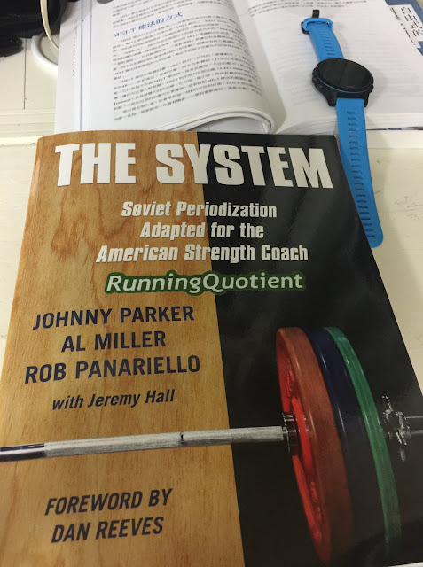

理論與訓練法之間的體用關係

《The System: Soviet Periodization Adapted for the American Strength Coach》是一本由美國教練所寫的訓練書，我個人非常喜歡，比最早從蘇聯引進週期訓練的圖德．邦帕博士（Dr. Tudor Bompa）所寫的《運動員的週期化訓練》（Periodization Training for Sports）更具實用性。
簡單來講，《The System》的理論與訓練法之間的鏈結更強、更緊密，較容易落實到訓練現場。
這本書由多位美國教練所著，他們去俄國學了多年的週期化訓練，並結合了數十年的執教經驗之後，寫下了這本著作，非常推薦。
這本書裡有這麼一段話，講得很好，暫譯如下：
「當時，尤里．維爾霍山斯基（Yuri Verkhoshansky）和里奧尼德．馬特維耶夫（Leonid Matveyev）這兩位教授正在蘇聯中央研究院的體育與運動科學實驗室裡開發增強式訓練（plyometric training），這種訓練法主要是為了提升運動員的爆發力與針對週期化訓練進行優化，以確保運動員的進步。在我們的學習之旅中，有位教練告訴我們『理論決定了練習的成效』；然而，從他們的觀點看來，應該是『練習的成效決定了理論』。所以在蘇聯，運動科學家並不會去指使教練應該做什麼，而是從練習中去尋找有效的訓練法，並從中去解釋它們的效應何在。」
「在蘇聯的訓練體制裡，教練和科學家之間有著很強的鏈結；然而，當要決定『該練什麼』的時候，通常取決於教練的眼睛和教練的訓練經驗，而非科學家。這樣的訓練模式顯然幫助了俄國在訓練概念上的進步，進而大幅超前美國的訓練法。」
這兩段話揭明了理論和訓練法之間的辯證以及互為體用的關係。
--
下面為上述兩段的原文，摘自 Johnny Parker, Al Miller, Rob Panariello With Jeremy Hall, “The System: Soviet Periodization Adapted for the American Strength Coach”, p20：
At the Soviet Central Institute of Physical Culture and Sport Scientific Research Laboratory, Professors Yuri Verkhoshansky and Leonid Matveyev were developing plyometric training progressions for power development and refining their periodization methods to ensure their athletes’ progress. On one of our trips, a coach told us that theory often determines practice; however, in their view, practice should determine theory. Rather than the Russian sports scientists dictating what the coaches should do, they looked for the processes producing results and then determined why they worked.
There was a strong bond in the Soviet Union between the coaching and science professionals; however, in the long run, it seemed that the “eye of the coach” and coaching experience determined more than the scientists when it came to what was to be done. Following that model certainly helped accelerate the Russian advances of training concepts well beyond the American methods.